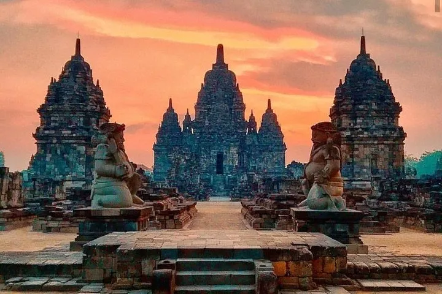
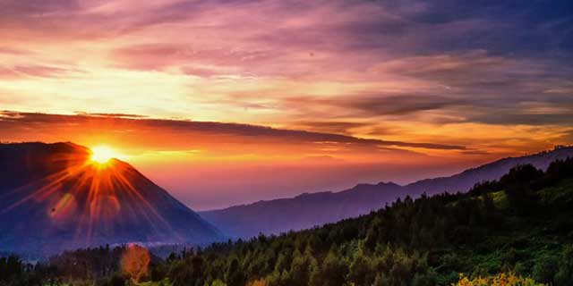
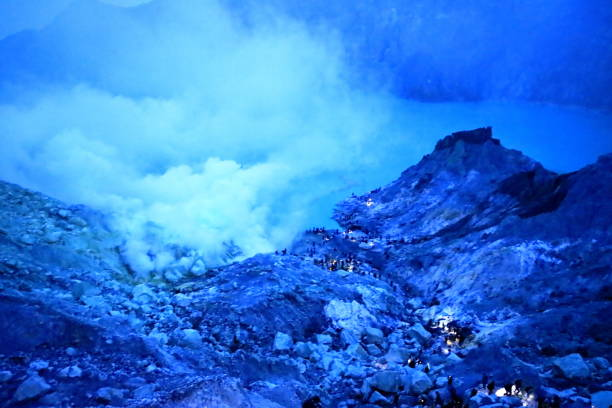
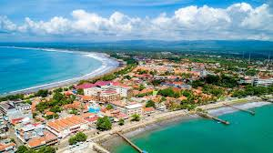
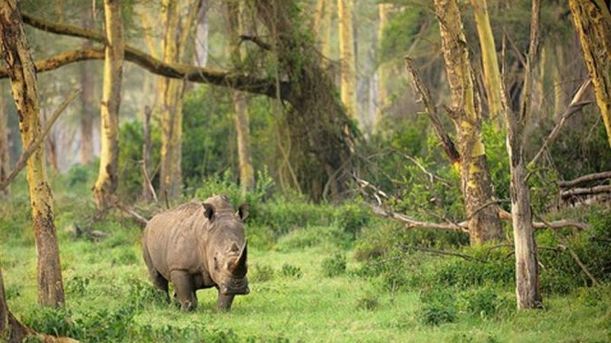
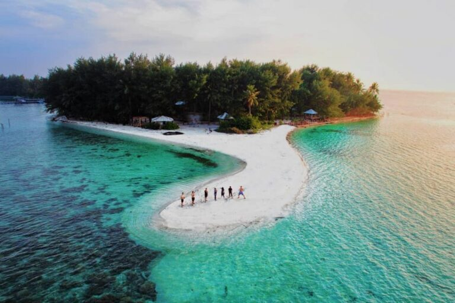
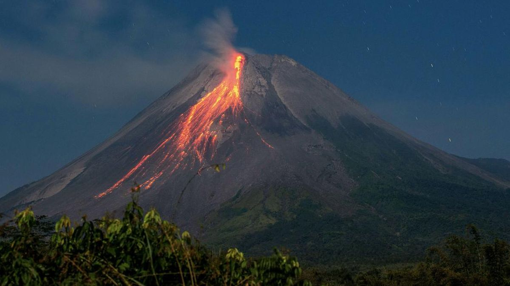
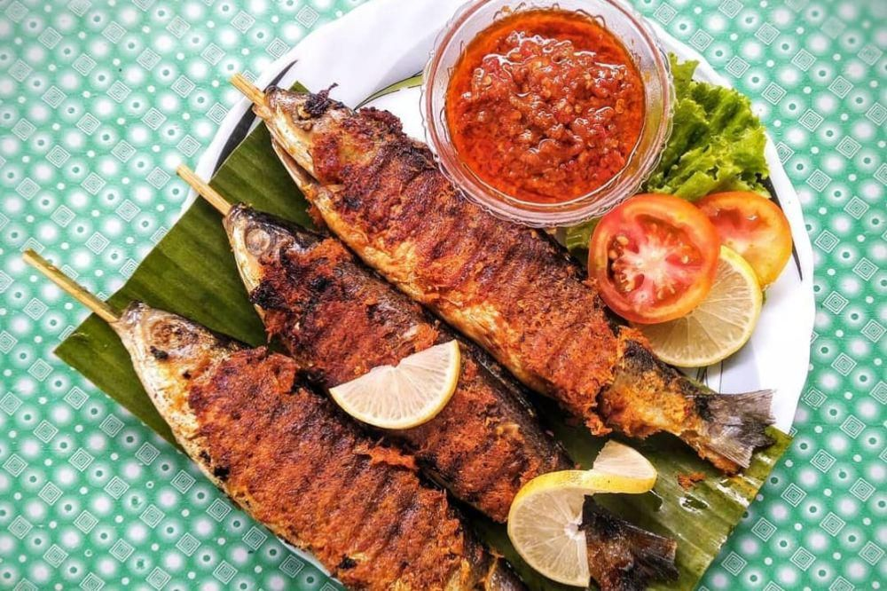
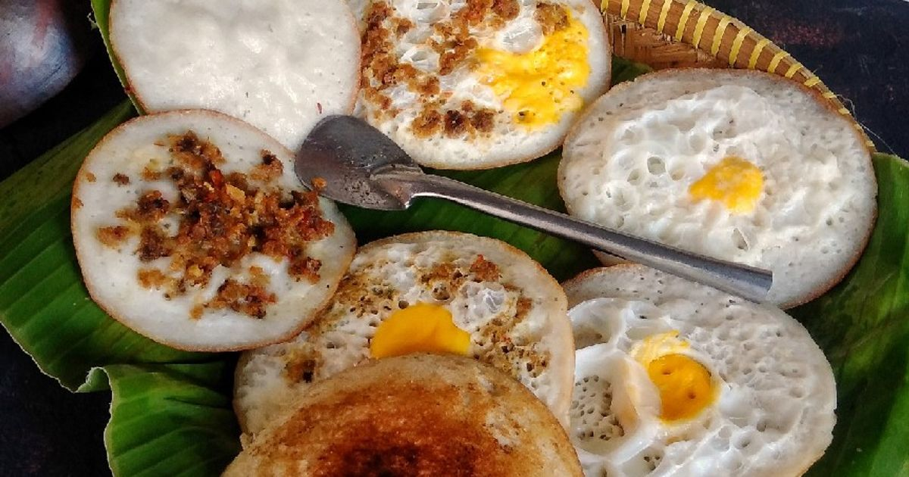

Tentang Jawa
Pulau Jawa merupakan pusat kebudayaan, sejarah, dan ekonomi Indonesia yang menyimpan berbagai objek wisata menakjubkan. Dari pegunungan, pantai, hingga peninggalan bersejarah, Pulau Jawa menawarkan pesona yang beragam. Setiap daerah memiliki ciri khas dan daya tarik tersendiri, menjadikannya salah satu tujuan wisata favorit wisatawan lokal maupun mancanegara. Pulau terpadat di dunia ini menawarkan perpaduan unik antara situs warisan dunia, gunung berapi megah, kota metropolitan modern, dan tradisi kerajaan yang masih hidup hingga kini. Dari tarian anggun Yogyakarta hingga gemuruh industri Jakarta. Pulau Jawa juga menyimpan keindahan alam, kekayaan budaya, serta kuliner yang menggugah selera. Dari candi bersejarah hingga pantai eksotis, dari gunung yang megah hingga makanan tradisional yang kaya rempah semua bisa ditemukan di pulau ini. Jawa adalah petualangan yang tak terlupakan.
✨ Mengapa Memilih Jawa?
Memilih Jawa berarti memilih petualangan yang kaya akan sejarah dan keajaiban alam. Pulau Jawa bukan hanya menjadi pusat kehidupan masyarakat Indonesia, tetapi juga pusat keindahan wisata dan kuliner Nusantara. Anda dapat menyaksikan keagungan arsitektur Borobudur dan Prambanan yang megah hingga Gunung Bromo yang indahntuk melihat matahari terbit yang ikonik, atau menyelami keramahan kota-kota budaya seperti Solo dan Yogyakarta, serta menikmati kuliner dari Gudeg manis khas Yogyakarta hingga Rawon gurih khas Surabaya,Transportasi yang memadai dan fasilitas yang lengkap menjadikan eksplorasi di Jawa sangat nyaman, semuanya mencerminkan kekayaan budaya yang luar biasa. Pulau ini menawarkan kontras yang menarik antara kecepatan kota besar dan ketenangan pedesaan berbudaya.
🗺️ Destinasi Unggulan
Candi Borobudur (Magelang, Jawa Tengah)

Candi Buddha terbesar di dunia ini dibangun pada masa Dinasti Syailendra. Struktur megah dan reliefnya yang indah menggambarkan kehidupan Buddha. Pemandangan sunrise di puncak candi menjadi daya tarik utama wisatawan.
Candi Prambanan (Yogyakarta)
Candi Hindu terbesar di Indonesia ini terkenal dengan arsitekturnya yang megah serta kisah legenda Roro Jonggrang. Saat malam hari, pengunjung bisa menikmati Sendratari Ramayana berlatar candi yang diterangi cahaya lampu.
Gunung Bromo (Jawa Timur)
Gunung Bromo menawarkan pemandangan matahari terbit yang menakjubkan di atas lautan pasir dan kabut. Selain itu, wisatawan dapat menjelajahi kawah aktifnya dan menikmati panorama Gunung Semeru dari kejauhan.
Kawah Ijen (Jawa Timur)
Terkenal dengan fenomena api biru (*blue fire*) yang langka dan keindahan danau belerang berwarna toska. Perjalanan yang menantang namun sangat berkesan.
Pantai Pangandaran (Jawa Barat)
Pantai yang populer dengan pasir putih dan ombak tenang, cocok untuk wisata keluarga. Pengunjung juga bisa mengunjungi Cagar Alam Pananjung untuk melihat gua alami dan satwa liar.
Kawah Putih (Jawa Barat)

Danau vulkanik berwarna hijau kebiruan ini berada di lereng Gunung Patuha. Suasana sejuk dan tenang menjadikannya tempat favorit untuk berfoto dan bersantai di tengah alam.
Dieng Plateau (Wonosobo, Jawa Tengah)

Dikenal sebagai “Negeri di Atas Awan”, Dieng memiliki Telaga Warna, Kawah Sikidang, dan Candi Arjuna. Selain alam yang menawan, daerah ini juga memiliki budaya unik seperti ruwatan anak gimbal.
Taman Nasional Ujung Kulon (Banten)
Merupakan warisan dunia UNESCO dan habitat terakhir badak Jawa. Pengunjung dapat menjelajahi hutan tropis, pantai alami, serta pulau-pulau indah seperti Peucang dan Panaitan.
Karimunjawa (Jawa Tengah)
Kepulauan eksotis ini menawarkan pantai berpasir putih, laut jernih, dan biota laut beragam. Aktivitas seperti snorkeling dan diving menjadi favorit wisatawan yang mencari ketenangan.
Gunung Merapi (Yogyakarta dan Jawa Tengah)
Gunung berapi paling aktif di Indonesia ini menawarkan wisata petualangan lava tour dan pendakian seru. Wisatawan juga dapat mengunjungi Museum Sisa Hartaku untuk mengenang letusan besar Merapi.
Pantai Parangtritis (Yogyakarta)

Pantai legendaris yang terkenal dengan kisah Nyi Roro Kidul dan pemandangan sunset menakjubkan. Pengunjung dapat naik bendi (delman) di sepanjang pantai atau menikmati panorama dari Bukit Paralayang.
Masjid Agung Demak (Jawa Tengah)

Masjid bersejarah ini dibangun oleh para Wali Songo dan menjadi simbol awal penyebaran Islam di Pulau Jawa. Arsitekturnya sederhana, tetapi menyimpan nilai spiritual dan budaya tinggi.
Makanan Khas Pulau Jawa
-
1. Sate Bandeng (Banten)
Ikan bandeng tanpa duri yang dibumbui rempah lalu dibakar, rasanya gurih dan manis.
-
2. Kerak Telor (Jakarta)

Olahan ketan dan telur dengan serundeng kelapa khas Betawi.
-
3. Surabi (Jawa Barat)
Pancake tradisional dari tepung beras dengan topping manis atau gurih.
-
4. Soto Kudus (Jateng)

Soto bening dengan daging ayam atau kerbau dalam mangkuk kecil.
-
5. Gudeg (Jogja)

Olahan nangka muda manis gurih, disajikan dengan ayam dan sambal krecek.
-
6. Rawon (Jawa Timur)

Sup daging berwarna hitam karena bumbu kluwek, rasanya gurih khas.
📸 Galeri Foto Jawa